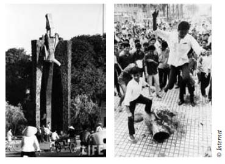

Một chớp mắt. Jacob biến mất và gã lai quên mất gã là Mai ai và đã ở đâu. Và gã đang mang cái gì trong túi. Chỉ trong một chớp mắt. Nhưng thế là quá đủ cho Cáo. Còn hơn cả đủ.
Cáo đã đứng trước gương, trước khi gã kịp tóm lấy cô. Cô cầm chiếc túi trên tay. Tiếng thét giận dữ của gã chát chúa trong tại cô khi cô ấn tay lên mặt gương.
Và rồi tất cả đều biến mất.
Gã Goyl.
Lâu đài bị phù phép.
Cả thế giới của cô.